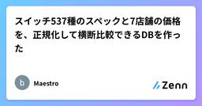

Zennの「自作キーボード」のフィード
フィード

自作キーボードのポインティングデバイスの特性の整理
Zennの「自作キーボード」のフィード
近年、トラックボールを搭載した自作キーボードが流行していますね。 昔からノートパソコンにはThinkPadのトラックポイントや、MacBookのトラックパッドなど、ポインティングデバイスが搭載されてきました。 別途、ノートパソコンにマウスを接続して使う人も多いようですが、トラックポイントやトラックパッドは愛用者が多く、トラックポイント付きの外付けキーボード（ThinkPad トラックポイント キーボード）や、外付けのトラックパッド（Magic Trackpad）も販売されています。 自作キーボードの文脈においては、ポインティングデバイスを搭載することで、マウスに手を伸ばさずにカーソルを動...
5日前

スイッチ537種のスペックと7店舗の価格を、正規化して横断比較できるDBを作った
Zennの「自作キーボード」のフィード
スイッチを調べると、サイトごとにスペックの表記が違う。同じはずの荷重が店舗によって違ったり、底打ち荷重が載っていなかったりする。日本のキーボードブログでも「どのサイトを見ても書いてあることが違う」という不満を見かける。価格も店舗ごとに違うので、買い替えのたびに複数店舗を行き来することになる。この2つ（表記のバラバラさと価格の分散）を解消するために、スペックと価格を1か所で横断比較できるデータベースを個人開発した。本記事では、データの正規化と価格の自動更新まわりで工夫した点をまとめる。 フロント: Next.js 15 (App Router) + React 19 + shadcn/ui...
6日前

全部透明の「おさかなキーボード」を自作した ── 3Dプリントの素材選びで学んだこと
Zennの「自作キーボード」のフィード
ボディもキーキャップも、全部透明。そんなキーボードを自作しました。 これまでは、自作の「Let's Split（レツプリ）」をずっと愛用していました。今回ベースにしたのは、32キーの左右分割キーボード「おさかなキーボード」です。基板やスイッチなどがまとまった「養殖セット」を購入し、ボディとキーキャップは自分で3Dプリントを発注して組み立てました。 3Dプリントの発注は今回が初めてで、一番悩んだのはどの素材で印刷するかでした。この記事では、素材選びで調べたことを中心に、組み立てからキーマップの調整までをまとめます。 大西拓磨さんが設計した、手のひらサイズの分割キーボードです。 32キーと聞...
12日前
MDBT50Q-1MV2を基板に直載せしてZMKを動かす③：ホットプレートでモジュールを付けたら、3回目で動いた
Zennの「自作キーボード」のフィード
無線モジュール（MDBT50Q-1MV2、中身は nRF52840）を基板に直接載せた薄型キーボード「Ashiyu mini」を、設計から完成まで記録するシリーズの3回目です。前回は、基板と一緒に届いた3Dプリントケースの改善点をまとめました。 基板の部品はほとんど製造サービスで付けてもらいましたが、無線モジュールだけは在庫がなく、自分で付けることになりました。 この記事は、モジュールを小型のホットプレートで基板に付けて、ファームウェアを書き込み、キーボードとして動くまでの記録です。用意していた手順はうまくいかず、やり方を変えて、3回目でやっと動きました。次の順に書いていきます。 はんだ...
21日前
MDBT50Q-1MV2を基板に直載せしてZMKを動かす②：3Dプリントケースと基板が届いたが、7つの改善点があった
Zennの「自作キーボード」のフィード
無線モジュールを基板に直接載せた薄型キーボード「Ashiyu mini」の基板とケースが届きました。基板は動いたのですが、3Dプリントのケースは、はめてみると次の7か所で問題がありました。 ダイヤルが回らない BTボタンと穴の位置がずれている 底板が透ける 底板が反る・たわむ 底板の左右の爪がかからない 小さいキーキャップのつばが小さい USB-Cの切り欠きが真四角 薄型のケースを3Dプリントで作ろうとしている人が、同じところでつまずかないように、何が起きたか、原因の見当、どう直すつもりかを順番に書いていきます。原因はまだ確かめていないものが多いので、そこは見当として読んでください。 ケ...
25日前
テンキーを真ん中に置いた54キーの格子配列キーボード「For Glad」をAuto-KDKで作った話
Zennの「自作キーボード」のフィード
なぜテンキーを真ん中に置いたのか Ctrl＋数字、Win＋数字。よく使うのに押しにくいショートカットです。左手でCtrlを押さえたまま、数字の段まで指を伸ばす。一日に何十回も繰り返すうちに、「数字がもっと近くにあればいいのに」と思うようになりました。 もうひとつ、ふつうのキーボードは両手が近すぎます。肩がすぼまり、長く打つと疲れる。手の間を空けたいけれど、職場では一体型キーボードを使いたい。 それなら、テンキーをキーボードの真ん中に置けばいい。両手の間は3列分ひらき、数字は修飾キーのすぐ内側に来ます。思いついたときは変な配列だと思いましたが、作ってみると、どちらの困りごとも解決しました。...
1ヶ月前
Choc V1スイッチ全集（2026年10月）
Zennの「自作キーボード」のフィード
2026年10月時点で国内で買えるChoc V1スイッチの一覧です。どれもKailh製です。Choc V1は素材とトラベルがほぼ共通なので、押し心地の種別で分け、作動荷重を図に、スペックの詳細を表にしました。価格と在庫は扱いません。
1ヶ月前
MDBT50Q-1MV2を基板に直載せしてZMKを動かす：自作の基板定義で押さえた7つのポイント（ZMK v0.3）
Zennの「自作キーボード」のフィード
自作キーボード「Ashiyu mini（足湯ミニ）」を設計しています。Pro Micro 型のコントローラー（nice!nano など）は使わず、無線モジュール MDBT50Q-1MV2（中身は nRF52840）を基板に直接載せました。 そのため、ZMK に用意されている「シールド」ではなく、基板そのものの定義（ボード定義）を自分で書く必要がありました。この記事は、その基板定義で押さえたポイントと、GitHub Actions でファームウェアのビルドが通るまでの記録です。 この記事を書いた時点では、基板はまだ届いていません（2026年10月に発注）。ビルドは通っていますが、実機での動...
1ヶ月前
Choc V2スイッチ全集（2026年10月）
Zennの「自作キーボード」のフィード
2026年10月時点で国内で買えるChoc V2スイッチの一覧です。どれもKailh製です。ハウジングの素材で分け、作動荷重とトータルトラベルを散布図に、スペックの詳細を表にしました。価格と在庫は扱いません。
1ヶ月前
TReK GT40Plus PARALLAX 追加ビルドガイド
Zennの「自作キーボード」のフィード
このドキュメントは、このキーボードにおける GL516互換PCB共通ビルドガイド や、一般的なキーボード基板との相違点を中心に、キーボード作製時における注意点等をまとめた、補足的なビルドガイドになります。 ProMicroというより、ProMicroの下になるダイオードふたつとLEDは、ProMicro用のピンソケットよりも先にハンダ付けしておいてください。 頑張ればなんとかなるとは思いますが、ピンソケットをハンダゴテで溶かしてしまったりする失敗を防ぐために、先にハンダ付けしておくことをオススメします。 ピンソケットのハンダ付けについては、GL516互換PCB共通ビルドガイド を参照して...
1ヶ月前
M5Dialで何が作れる？用途別に見る60件の作例と開発の始め方
Zennの「自作キーボード」のフィード
M5Dialは、丸いタッチ画面とダイヤルを備えた、M5StackのESP32-S3搭載開発ボードです。 音量ノブやタイマーを作るのに向いていそうですが、作例にはほかにもさまざまな用途がありました。キーボードのトラックパッド、スマートホームの操作盤、CNCのリモコン、楽器などにも使われています。 私は自作キーボードや入力デバイスを開発しており、M5Dialを使った卓上リマッパー「Orbit Remapper」も制作しています。ほかのM5Dialの作例を調べる中で見つけた作品を、M5Dialの紹介として整理しました。 この記事では、次の順で紹介します。 M5Dialの特徴と、初代／v1.1の...
2ヶ月前
極薄？板厚6.2mm 自作レバーレス
Zennの「自作キーボード」のフィード
以前キーボードのレイアウトを踏襲したレバーレス作成の記事を書きました。 しかし、実際に使用することで以下の問題点が浮き彫りとなりました。 ボタン配置が最適とはいえない 基板裏の厚みが大きく、手首付近の段差が大きい 外形の長辺がA4サイズを超えるため、一般的なシート材料の購入性が低下する はんだ付けの外注に基板とは別で工賃・送料・日数がかかる これらの課題を踏まえ、より使いやすいレバーレスを目指して２台目となる改良モデルを設計することにしました。 今回の改良では、主に次の4点をテーマとして設計を行いました。 ボタン配置の最適化 基板裏の薄型化 外形をA4サイズ以内に収める JLCPCBで基...
2ヶ月前
キーボードフリーマーケット トーキョー2026のお品書き
Zennの「自作キーボード」のフィード
昨年に引き続き、今年もキーフリに出店します。 Nobuki Inoueさんと出店します。 09/12：初稿 09/13：キボっちが完売のためキーフリでから除外 09/14：Nobuki Inoueさんの商品一覧へのリンクを追加 09/17：組み立て済みPalmslaveを追加 今回も現金オンリー💴でお願いします🙏 個人製作のため、仕上がりに個体差や製造時の傷・カスレなどが生じる場合があります。ご了承ください。 写真は組み立て例です。当日取り扱うものの色や付属品とは異なる場合があります。 掲載価格は仮の設定です。開催前や当日に変更する可能性がございます。 部品の調達状況などによって、当日取...
3ヶ月前
VialでOS判別キー
Zennの「自作キーボード」のフィード
私は普段、 仕事：Windows プライベート：Mac+Windows（仕事用とは別のゲーム用マシン） 動画視聴：Chromebook という構成でパソコンライフを謳歌しているのですが、キーボードに至ってはMacとWin（仕事）とWin（ゲーム用）でひと組のキーボードを、マグネット式のUSB-Cコネクタで切り替えながら共用しています。 机の上が汚いのは気にしないでください そんなわけで、キーボードのキー（特にモディファイア）を、Macの時とWinの時で別の機能を割り当てたいことが度々出てきます。一般的にこのような要望では、キーボードファームウェアのOS判別機能を使い、それぞれのOS用とし...
3ヶ月前
日本語配列の磁気式キーボードを基板からフルスクラッチしてみた
Zennの「自作キーボード」のフィード
本記事は、随時加筆修正を行う可能性がありますので、ご容赦ください。 はじめまして、Anikiと申します。 今回、磁気キーボードを基板からフルスクラッチで作ってみましたので、そのご報告を兼ねて制作記録をまとめてみました。磁気キーボードを自作したいなどという狂った方はぜひご参考にしていただければと存じます。 名前は JP60HE で、現在V0.9のプロトタイプ段階となります。 写真は上からトップ面・ボトム(部品実装)面です。 ai03氏作のGH60互換・日本語配列60%キーボードPCBである「JP60」をベースに、メカニカルスイッチではなく磁気スイッチを使用できるよう設計したキーボード基板で...
3ヶ月前
ZMK の設定を、ファームウェアを焼き直さずに変えたい
Zennの「自作キーボード」のフィード
西村です。 普段 roBa 派生の自作分割キーボードを使っていて、前の記事に書いたように、キーマップや接続まわりを少しずつ自分好みに調整しながら運用しています。この調整がとにかく面倒でした。hold-tap の tapping-term を 200ms から 180ms にしたいだけでも、DeviceTree を書き換えて、ビルドして、UF2 をキーボードに書き込む。30 秒で終わってほしい変更のために、毎回数分のサイクルが挟まります。180ms がしっくりこなくて 190ms を試したくなったら、また最初からです。 ZMK のファームウェアは、キー入力を処理するエンジン部分と、キーマッ...
4ヶ月前
キーボードの遍歴 2012-2026：Apple Keyboard から HHKB、Keychron、Cidoo V75 まで ⌨️
Zennの「自作キーボード」のフィード
2012年から現在まで、US配列のキーボードを7台乗り換えてきました。その記録です HHKB Pro → Keychron K6 → Keychron K8 Pro → Niz → Cidoo V75 という流れで、途中でフレーム塗装や静音化などのModにハマりました 静音化はやりすぎると失敗します。音のフィードバックが消えると、仕事をしている感覚まで消えます ソフトウェアエンジニアの仕事道具のうち、いちばん長い時間ずっと手が触れているのがキーボードです。 1日8時間、年間240日働くとして年間1,920時間。3年使えば5,760時間になります。3万円のキーボードを3年使うと1時間あたり...
4ヶ月前
QWERTY をやめて大西配列にしたらタイピングが快適！—移行 7 か月の記録
Zennの「自作キーボード」のフィード
私は長年使ってきた QWERTY 配列をやめ、大西配列 へ移行しました。使い始めてから 7 か月が経ち、現在はコード、メール、そのほかの日常的な文字入力を大西配列で行っています。 先に正直な結論を書くと、タイピング速度はまだ QWERTY を使っていた頃まで戻っていません。それでも、QWERTY へ戻そうとは思っていません。 違和感を抱えながら速く入力するより、速度が少し落ちても、納得できる指の動きで入力するほうが快適だったからです。 この記事では、次の内容を紹介します。 a が小指から中指へ移るなど、打っていて実際に変わったこと QWERTY と併用して失敗した話と、寿司打と音声入力で...
4ヶ月前
Keyball44 のキーマップ設計：大西配列とレイヤーでホームポジションから手を離さない
Zennの「自作キーボード」のフィード
2025 年末に、キーボードを Keyball44 に変えました。左右分割型で、右手側にトラックボールを内蔵した 44 キーの自作キーボードです。今では、日常のパソコン作業に欠かせない相棒になっています。 同時に、長年使ってきた QWERTY 配列もやめ、ローマ字入力向けに設計された 大西配列 へ移行しました。Keyball44 にした理由も、大西配列にした理由も、自分の中では同じです。ホームポジションをなるべく崩さず、力の弱い指に無理をさせたくない。 この記事では、次の内容を紹介します。 エルゴノミクス キーボードでは解決できなかった不満と、Keyball44 のちょうど良さ レイヤー...
4ヶ月前
Auto-KDKを用いたUS 60%キーボードの製作記録
Zennの「自作キーボード」のフィード
6月29日 Auto-KDKというツールを知った。 自作キーボードには以前から興味があったもののPCBまで自分で設計する気にはなれなかった。KiCadを覚えて、回路図を引いて、キーマトリクスを考えて、配線して、製造用のデータを出す。調べるほど、作り始める前に勉強することが増えていく。 ところがAuto-KDK（Auto-Keyboard-Design-Kit）では、キーを画面に並べるとPCB、ケース、ファームウェア設定まで生成してくれるらしい。配線も自動。これなら自分にもできるかもしれない。 その日に作業を始めたわけではない。実際に設計を始めたのは翌朝、6月30日である。 それから約3時...
4ヶ月前